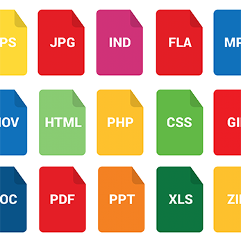

Hoe
De weg naar onze oplossing
-

The format mess
Om dit stedelijk probleem van zoekverkeer op te lossen zijn we begonnen met het verzamelen van data van verschillende bronnen. Deze hebben we dan geherpubliceerd als linked open data. In de toekomst hopen we dat de data op deze manier wordt gepubliceerd door de bonnen zelf.
-

Het verzamelen
Om de krachten van historische data aan te kunnen aantonen hebben gedurende enkele maanden data verzamelend. Door deze data op te slaan in bestanden zijn we erin geslaag om de infrastructuurkost laag te houden
-

Gebruik
Om te kunnen bewijzen dat de browser in staat is om deze data te verwerken is er een proof of concept gemaakt. Deze vraagt de data op en gaat deze verwerken. Na het verwerken is hebben we besloten om de data te visualiseren. Hierdoor krijgt de gebruiker een indruk van de mogelijkheden van linked open data.